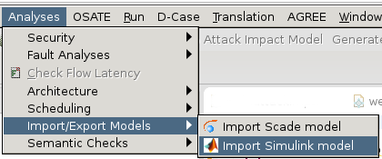

The functional importers create AADL models skeletons using a functional model such as SCADE or Simulink. SCADE or Simulink provides a language to describe a functional description using a graphical notation. However, these models do not show many deployment information, which may result in limited analysis.
Such models are often used to simulate and prototype the system before architecture design efforts. For that purpose, import these functional models can help to make the initial models by automatically generating a model skeleton from existing prototyping efforts. The model skeleton can then be refine according to the design specification.
In both case, before selecting the menu, you have to select an empty directory in your OSATE installation (see picture below). This directory will then contain the generated AADL model. Then, the tool will ask to select the Simulink or SCADE model to import.

To import a Simulink model, make sure you have selected an empty directory in your workspace and then, select the menu entry Import Simulink model under the Analyses menu. This is shown in the figure below in the purple box. Please note that the importer support only Simulink models saved under the slx format.
To import a SCADE model, make sure you have selected an empty directory in your workspace and then, select the menu entry Import SCADE model under the Analyses menu. This is shown in the figure below in the red box.
The following sections provide an overview of the mapping rules to transform a Simulink or SCADE model into an AADL model
For both importers, the tool will create three files:
If you have any question or would like to report a bug, please do it on the OSATE plug-in issue tracker on github. You can also ask questions on the AADL mailing-lists.